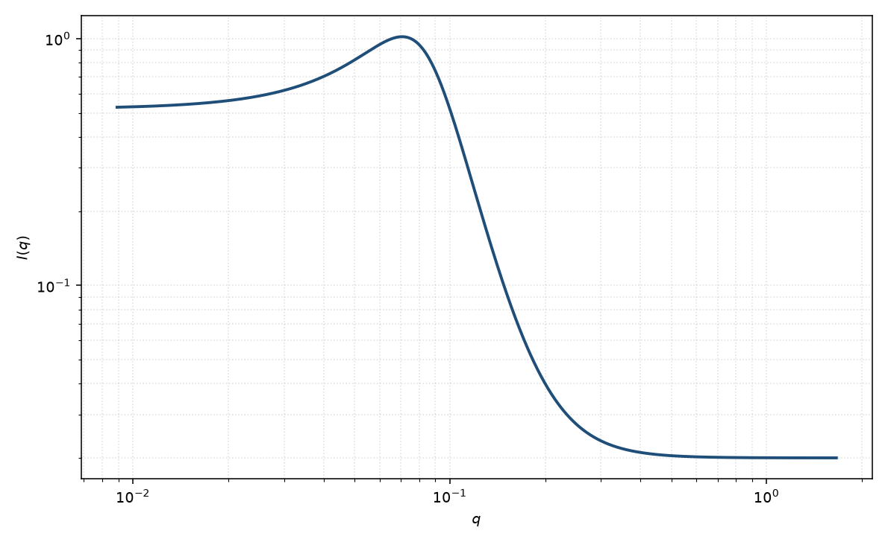

Teubner–Strey
Teubner–Strey
适用场景
双连续微乳、弱有序的两相流体常用 Teubner–Strey：强度是 $a+c q^2+d q^4$ 的倒数。峰位给出畴间距，宽度给出关联长度 $\xi$。
层状有高阶峰时改用层状堆叠。旋节早期可用 Cahn 型，但 TS 也能拟合宽峰。
物理图像
对两相涨落的 Landau 展开保留到 $q^4$，得到 $I\sim 1/(a+c q^2+d q^4)$。$c\lt 0$ 时出现峰。由 $a,c,d$ 可定义畴间距 $d_{\mathrm{TS}}$ 与 $\xi$。
取向：剪切微乳可使峰各向异性。磁性两相的 $d_{\mathrm{TS}}$ 用磁衬度，不必等于核间距。
示意图

核心公式
出发点
双连续微乳的组成涨落用 Landau 自由能描述。对 Fourier 模 $\phi_q$ 展开到 $q^4$（Cahn–Hilliard 型梯度加平方 Laplacian），按能量均分，强度正比于分母的倒数 $1/(a+c q^2+d q^4)$。
推导
实空间密度泛函（到四阶梯度）
$$F[\phi]=\frac{1}{2}\int\bigl[a\,\phi^2+c(\nabla\phi)^2+d(\nabla^2\phi)^2\bigr]\,\mathrm{d}^3r.$$Fourier 空间：$F=\frac12\sum_q(a+c q^2+d q^4)\lvert\phi_q\rvert^2$。经典统计 $\langle\lvert\phi_q\rvert^2\rangle\propto 1/(a+c q^2+d q^4)$，故
$$I(q)=\frac{8\pi/\xi}{a+c q^2+d q^4}+B.$$（前置随文献略有不同，拟合时常被标度吸收。）$d>0$ 保证大 $q$ 稳定；$c<0$ 时分母在有限 $q$ 取极小，出现峰。令 $q_m^2=-c/(2d)$。由极点定义畴间距与关联长度
$$d_{\mathrm{TS}}=2\pi\left[\tfrac12\sqrt{a/d}-c/(4d)\right]^{-1/2},\qquad\xi=\left[\tfrac12\sqrt{a/d}+c/(4d)\right]^{-1/2}.$$对应的实空间相关是衰减振荡 $\gamma(r)\propto(\mathrm{e}^{-r/\xi}/r)\sin(2\pi r/d_{\mathrm{TS}})$。
低 $q$ 与渐近
低 $q$：$I(0)\propto 1/a$，有限。峰位 $q_m$ 满足 $d_{\mathrm{TS}}\sim 2\pi/q_m$。高 $q$：$I\sim 1/(d q^4)$，即 Porod 型 $q^{-4}$（光滑两相界面）。层状高阶峰不是本式所能给出的。
参数表
| 参数 | 符号 | 含义 | 单位 | 典型范围 |
|---|---|---|---|---|
| TS 系数 | $a,c,d$ | Landau 展开系数 | 由 $q$ 单位决定 | $d\gt 0$；$c\lt 0$ 才有峰 |
| 畴间距 | $d_{\mathrm{TS}}$ | 由 $a,c,d$ 导出 | Å | 微乳典型数十至数百 Å |
| 关联长度 | $\xi$ | 峰宽对应的衰减长度 | Å | 与 $d_{\mathrm{TS}}$ 同量级或更短 |
| 标度 / 本底 | $\mathrm{scale}$, $B$ | 前置因子与常数本底 | 与强度单位一致 | 实验相关 |
拟合注意
取向：粉末 TS 假定各向同性双连续。层状微乳应改用层状页，不要用 TS 硬撑高阶峰。
多分散畴间距加宽峰，表现为更短的 $\xi$。磁性衬度只进入幅度，不进入 $d_{\mathrm{TS}}$ 的几何，除非磁畴与核畴不同。
可辨识性：$a,c,d$ 与标度、本底相关。应报告导出的 $d_{\mathrm{TS}}$、$\xi$ 而不是三个裸系数。宽而靠近 $q=0$ 的峰与旋节式难以分辨。
相近模型
- 旋节分解 — Cahn–Hilliard 早期峰，时间演化不同。
- 宽峰 — 经验峰，不导出 $\xi$ 与 $d_{\mathrm{TS}}$ 的 TS 关系。
- 层状 — 有厚度振荡或高阶布拉格时离开 TS。
参考文献
- Teubner, M.; Strey, R. Origin of the scattering peak in microemulsions. J. Chem. Phys. 1987, 87, 3195–3200. DOI: 10.1063/1.453006